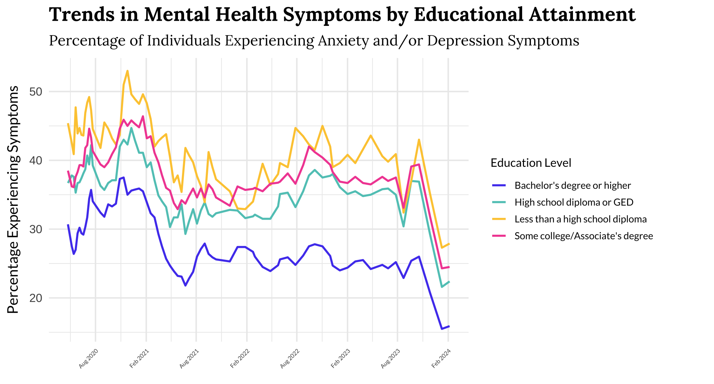

Mental Health Trends by Educational Attainment

- Individuals with lower educational levels consistently exhibited higher rates of anxiety and depression symptoms.
- Research by Ettman et al. (2021) indicates that Americans with lower incomes were more susceptible to depression due to financial stress related to COVID-19.
- The decline in mental health among those with lower education levels could be attributed to financial stressors such as job loss and inability to pay rent.
➔
➔